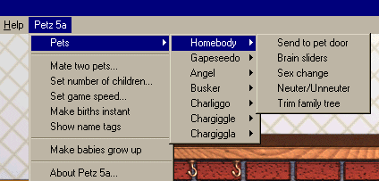
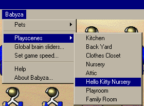
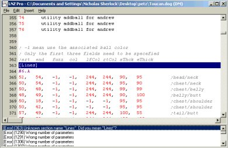
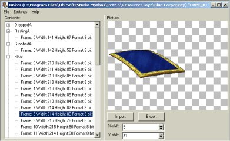
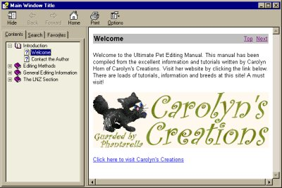
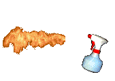

Utilities by Nicholas Sherlock
~~~~~~~~~~~~~~~~~~~~~~~~~~~~~
On this page you'll find pictures and info about the great utilites made by Nicholas Sherlock.
Go to his site
to download his great utilities :-) Also there you'll find a useful forum; go there to suggest ideas or ask for
help.
These work on my Windows 95 system, and should work for everyone. Nicholas has provided helpfiles for some of
the utilities, but anyway they are super-easy to use. There is of course now the LNZ info helpfile compiled by
Nicholas from my LNZ Info early last year, and Kishi Kat of the beautiful The Light Fantastic site has made a neat
tutorial for Tinker. Go to her site for some great toyz and other goodies!
I have also now made some tips on using Tinker and more for
LNZPro version 2 (or later), you can also get to those from my main
tutorials page. Nicholas has now made a great helpfile on using Pet Workshop for variations, you can get it from
his site, and go to Genuine Kennels' All Purpose Petz for a superb illustrated tutorial on using Pet
Workshop!
The programs did not cause any problems with corruptions or crashes in my game, but they are basically still in development and of course you should always make backup copies of any file that you are going to edit.
Take a look below to see screengrabs from many of Nicholas' great utilities -- and download a Petz 5 toy, too
:-)
New Petz II, 3, 4, 5 and Babyz Features!
 
LNZPro, designed specifically for Petz and Babyz editing.
Now does all that Resource Hacker does, and much much more! Yay!

Pet Workshop -- a visual tool for Petz editing. Babyz editing should be available soon.

Tinker -- the perfect tool for editing SPR and FLH/FLM filmstrips. Also useful to make toyz show up in the Petz 5 carry-case.

LNZ info helpfile
compiled by Nicholas from my breakdown chunks etc, with extras :-) Only up to date as far as Feb 2005; check out
my LNZ breakdown chunks for any later info.

Here's a brilliant example for you of an edited toy, made by Nicholas with his incredible Tinker...

A Spray Bottle for Petz 5
This will overwrite your game's Water Spray Bottle, so make sure you keep a copy of your original.
.